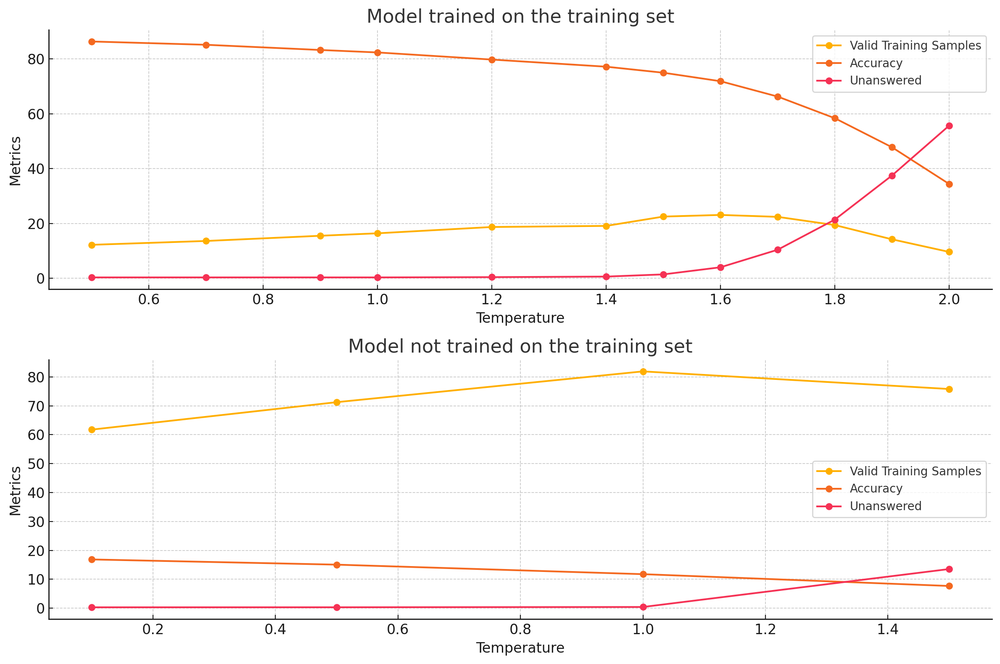
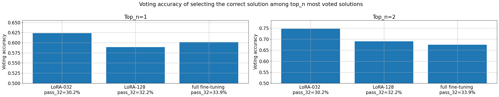
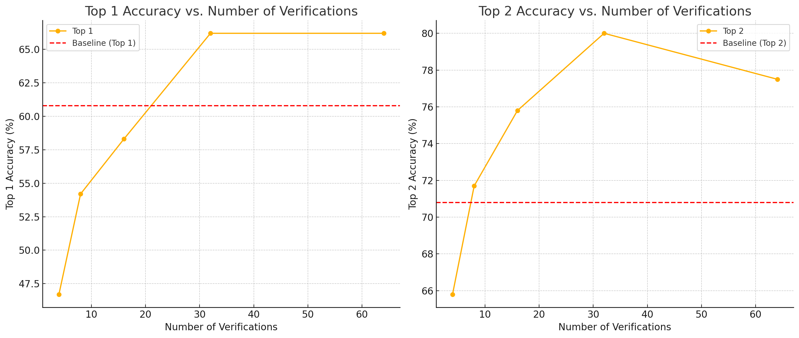
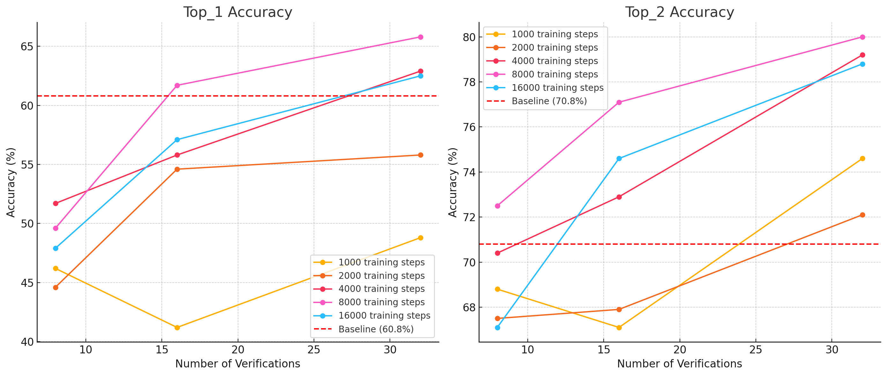

Iteration 43. Train a verifier
21-10-2024
Goal
Can we improve the LB score by better selecting the predictions?
Motivation
Currently I use voting to select the predictions of the model for the submission. On Iteration 9 we saw that voting can select the best answer with an accuracy of 30-50%.
If we can use a model to improve the answer selection there could be a lot of room for improvement, in the best case we might triple the score! (it's not going to happen)
The idea is to train a model that is able to select between two possible answers for a task. Instead of predicting the whole answer it just has to select the correct one.
Development
Dataset design
Original tasks have the following format:
train: [{input:, output:}, .., {input:, output:}]
test: [{input:, output:}, .., {input:, output:}]
I have reviewed the data augmentation code and it is applied to any field for each sample, so I could
add additional fields to input and output and they will also be data augmented. For example I could
add attempt_1, attempt_2 and so on.
Then at training I should select:
- Which would be the test sample
- Which prediction will be used for training
Local run to verify that it is working
Click to see bash commands
python fine-tuning.py \
--model_path /home/gbarbadillo/data/Qwen2.5-0.5B \
--device_map None \
--lora_r 128 \
--output_dir /mnt/hdd0/Kaggle/arc24/models/20241023_debug_verifier/01_select-output \
--train_datasets /mnt/hdd0/Kaggle/arc24/data/verifier/training_v0.json select-output-from-examples-v0 \
--val_dataset /mnt/hdd0/Kaggle/arc24/data/new_partitions/smaller_5_tasks.json output-from-examples-v1 \
--grid_encoder "GridShapeEncoder(RowNumberEncoder(MinimalGridEncoder()))" \
--max_steps 10 \
--logging_steps 10 \
--eval_steps 200 \
--batch_size 16 \
--learning_rate 1e-4 \
--max_seq_len 4096 \
--no-resume_from_checkpoint \
--verbose
python fine-tuning.py \
--model_path /home/gbarbadillo/data/Qwen2.5-0.5B \
--device_map None \
--lora_r 128 \
--output_dir /mnt/hdd0/Kaggle/arc24/models/20241023_debug_verifier/02_verify-output \
--train_datasets /mnt/hdd0/Kaggle/arc24/data/verifier/training_v0.json verify-output-from-examples-v0 \
--val_dataset /mnt/hdd0/Kaggle/arc24/data/new_partitions/smaller_5_tasks.json output-from-examples-v1 \
--grid_encoder "GridShapeEncoder(RowNumberEncoder(MinimalGridEncoder()))" \
--max_steps 10 \
--logging_steps 10 \
--eval_steps 200 \
--batch_size 16 \
--learning_rate 1e-4 \
--max_seq_len 4096 \
--no-resume_from_checkpoint \
--verbose
Experiment design
We need to train a verifier an check if it allows to improve the accuracy of the prediction selection. Later on following iterations we could optimize the training.
I believe the experiment that is most likely to succeed is to use a LoRA that has been already fine-tuned on ARC tasks and fine-tune again for output selection. I could run a few trainings with different durations.
F.e. the model 20240921_optimal_train_duration/05_LoRA-032-Qwen2-0.5B-Instruct_lr1e-4_4e4steps_2gpus_8192msl/checkpoint-40000 could be
a good candidate.
Prediction ranking
What is the best ranking system to find the top k players among a group of n players?
This are the requirements:
- The matches are 1vs1
- The system should be as efficient as possible, it should work with the minimun number of matches
- The system should be robust to unexpected results, there is some randomness in the results of the matches
- Ideally the system will allocate the matches to extract the most information from the result
- There could be some level of uncertainty in the results that should decrease if the budget for the number of matches increases
Some options:
Trueskill
- https://trueskill.org/
- https://www.microsoft.com/en-us/research/project/trueskill-ranking-system/
- https://en.wikipedia.org/wiki/TrueSkill
- https://stackoverflow.com/questions/15054004/trueskill-matchmaking-implementation
Player ranks are displayed as the conservative estimate of their skill,
R=\mu -3\times \sigma. This is conservative, because the system is 99% sure that the player's skill is actually higher than what is displayed as their rank.
Swiss-system tournament
A Swiss-system tournament is a non-eliminating tournament format that features a fixed number of rounds of competition, but considerably fewer than for a round-robin tournament; thus each competitor (team or individual) does not play all the other competitors. Competitors meet one-on-one in each round and are paired using a set of rules designed to ensure that each competitor plays opponents with a similar running score, but does not play the same opponent more than once. The winner is the competitor with the highest aggregate points earned in all rounds. With an even number of participants, all competitors play in each round.
The Swiss system seeks to provide a clear winner with a large number of competitors and a relatively small number of rounds of competition, without a single bad result terminating participation. In a Swiss system the match pairing for each round is done after the previous round has ended and depends on its results.
Assuming no drawn games, determining a clear winner (and, incidentally, a clear loser) would require the same number of rounds as that of a knockout tournament, which is the binary logarithm of the number of players rounded up.
Notice that it requires the same number of rounds, but the number of matches will be higher because it is constant throughout the rounds compared to teh knockout tournament.
Another advantage compared to knockout tournaments is that the final ranking gives some indication of the relative strengths of all contestants, not just of the tournament winner.
Round-robin tournament
https://en.wikipedia.org/wiki/Round-robin_tournament
A round-robin tournament or all-play-all tournament is a competition format in which each contestant meets every other participant, usually in turn.
In theory, a round-robin tournament is the fairest way to determine the champion from among a known and fixed number of contestants. Each contestant, whether player or team, has equal chances against all other opponents because there is no prior seeding of contestants that will preclude a match between any given pair. The element of luck is seen to be reduced as compared to a knockout system since one or two bad performances need not ruin a competitor's chance of ultimate victory. Final records of participants are more accurate, in the sense that they represent the results over a longer period against the same opposition.
Round-robins can suffer from being too long compared to other tournament types, and with later scheduled games potentially not having any substantial meaning. They may also require tie-breaking procedures.
Results
Generating wrong predictions
It is surprisingly difficult to generate wrong predictions for the training dataset. That is why I'm going to train new models that do not use the training dataset for training. We can modify the temperature of the inference to force the errors, but it also increases the number of non valid predictions.

Accuracy of voting

For these models voting is able to select the best response in the first position around 60% of the times, and around 70% in the top two positions.
First results with verifier

It's very nice to see that the first attempt to select predictions with a verifier already shows improvements over the voting baseline. The top_2 selection improves specially, from ~70% to ~80%. An improvement of that magnitude on leaderboard would improve the LB score from 40 to 45-46.
- It seems that using more than 32 verifications per prediction does not increase the accuracy of the selection
- Verifying is faster than generating grids, 30% faster, but I would expected much faster because we are generating very few output tokens compared to generating a grid. It seems that the long input prompt is dominating over the inference.
- The plot above is for the predictions:
20240921_optimal_train_duration/05_LoRA-032-Qwen2-0.5B-Instruct_lr1e-4_4e4steps_2gpus_8192msl/checkpoint-40000/inference_evaluation_x032.json - As a verifier model I used:
/mnt/hdd0/Kaggle/arc24/models/20241023_first_verifiers/05_verify-and-select_lora032-Qwen2-0.5B-Instruct_lr5e-5_bs32_8000steps_2gpus_8192msl/checkpoint-8000
Trying with different models
I trained different models, just varying the number of training steps. We can visualize how the accuracy is affected.

- The best model seems to be the one trained for 8k steps
- The quality of the model is relevant, f.e. the models trained for 1k and 2k steps are clearly worse. Thus it is likely that we can train even better models that outputperform this initial trainings.
First submissions
Problems with submission and evaluations
The first submission attempts have timeout out when doing 32 predictions per tasks and 32 verifications per prediction.
Running a validation submission with 20 tasks took 2h40 seconds.
- Training took 1h49
- Inference took 13 min (32 predictions per task)
- Verification took 30min (32 verifications per prediction)
The problem was that I was using Qwen2.5 as the base model, when I trained the verifiers on Qwen2.
First results
Please go to Iteration 45 to see the results.
Conclusion
The verifier has predictive power to select the predictions, but we need to improve it.
Next steps
- How could I improve the verifier?
- Use a bigger dataset
- Train also on the test set (just for submission)
- More data augmentation, allow task augmentation
- Maybe use an ensemble of models instead of a single model
- I could use a bigger model, full fine-tuned
- It's likely that a model trained in all the prediction tasks will perform better
- Use voting to solve ties
- I could make more efficient use of compute by using uncertainty and only making verifications for the predictions that are not significative different from the top prediction.
TODO
- Maybe I can force VLLM to generate different predictions for the same prompt?
- Train a model without the train dataset to generate wrong predictions
- Create a dataset that can be used to train a verifier.
- How do the wrong answers look like?
- It has to be of the train dataset, so I can measure the improvement on the evaluation set.
- Create prompts to select between answers
- How to integrate this new task into the training script?
- How should I format the dataset?
- How to apply data augmentation?
- ~Add support for task augmentation~ Currently is only applied to input or output, so it would not work with a new key
- Train a model to select answers
- What is the best way to use the model? There might be some compute intensive way and a faster and approximate one
- Measure the improvement over voting
- Can I train a single model to do all the tasks?
- What if instead of choosing two options I just request the model to answer if the proposed output is correct or not? That would simplify the post-processing a lot.
- Create a script to select predictions using a verifier (use the notebook as a template).
- I would probably need an easy run script also.
- Differences between verifier models and selection accuracy
- First submission results